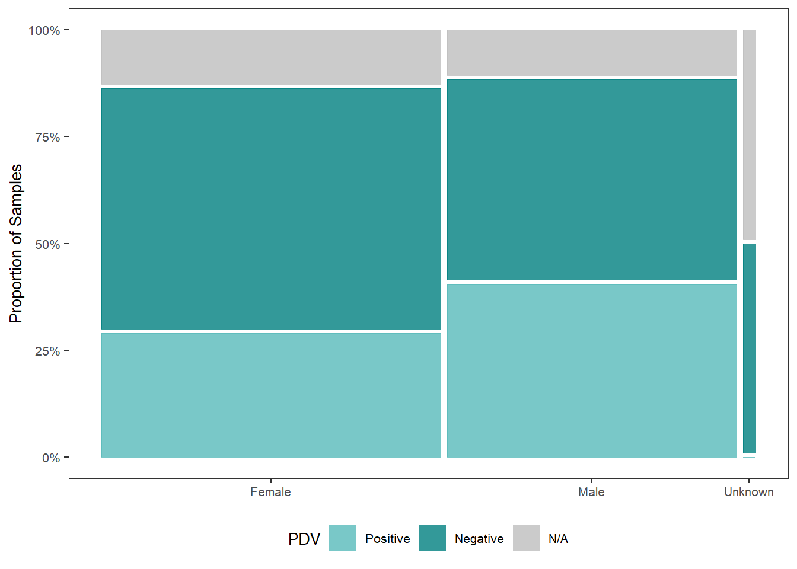
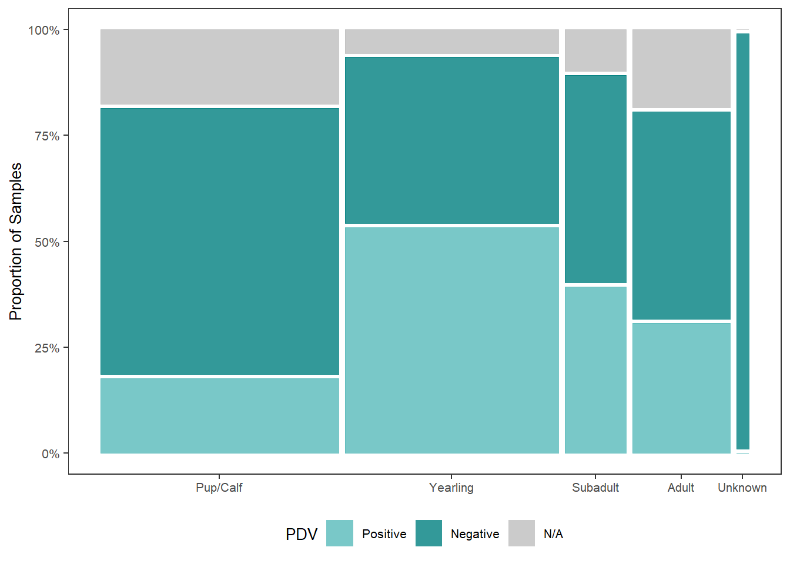
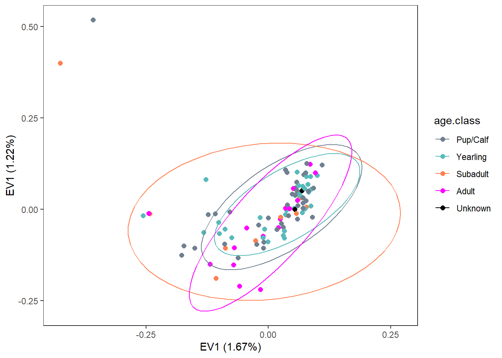
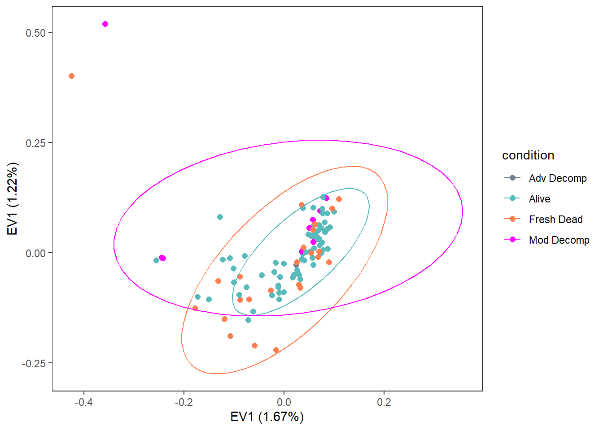
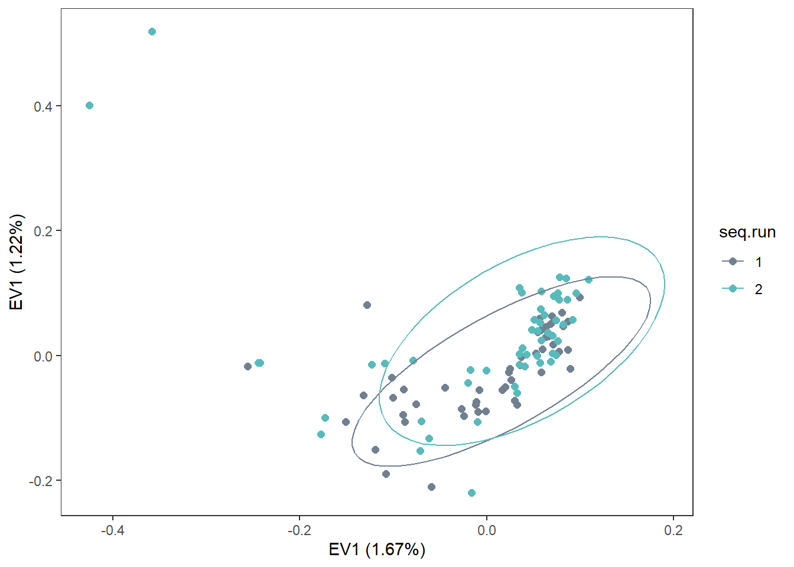

5 Outlier Analysis - All samples
5.2 Data
meta <-
read.csv("Input Files/metadata.csv") %>%
mutate(seq.id=gsub("B5GAN", "", seq.id),
condition=gsub("1", "Alive", condition),
condition=gsub("2", "Fresh Dead", condition),
condition=gsub("3", "Mod Decomp", condition),
condition=gsub("Moderate Decomposition", "Mod Decomp", condition),
condition=gsub("Advanced Decomposition", "Adv Decomp", condition),
age.class=factor(age.class, levels=c("Pup/Calf", "Yearling",
"Subadult", "Adult", "Unknown")),
seq.run=factor(seq.run, levels=c("1", "2")))5.3 VCF to GDS
Import VCF file with SNPs after filtering for MAF, missing genotypes, and LD-based pruning.
# Load VCF file and create GDS file
# snpgdsVCF2GDS("C:/Users/Christina/OneDrive - University of Maine System/pv-wgs/allsamples_filter.vcf",
# "C:/Users/Christina/OneDrive - University of Maine System/pv-wgs/allsamples_filter.gds",
# method="biallelic.only")
snpgdsSummary("C:/Users/Christina/OneDrive - University of Maine System/pv-wgs/allsamples_filter.gds")## The file name: C:\Users\Christina\OneDrive - University of Maine System\pv-wgs\allsamples_filter.gds
## The total number of samples: 102
## The total number of SNPs: 402482
## SNP genotypes are stored in SNP-major mode (Sample X SNP).5.4 LD-based SNP Pruning
# set.seed(1000)
#
# snpset <- snpgdsLDpruning(geno, ld.threshold=0.2, autosome.only=FALSE)
# snpset.id <- unlist(unname(snpset))
# snpset2 <- snpgdsLDpruning(geno, ld.threshold=0.1, autosome.only=FALSE)
# snpset.id2 <- unlist(unname(snpset2))
#
# snpset3 <- snpgdsLDpruning(geno, ld.threshold=0.5, autosome.only=FALSE)
# snpset.id3 <- unlist(unname(snpset3))5.5 PCA
5.5.1 PCA Original
5.5.1.1 Run PCA
## Principal Component Analysis (PCA) on genotypes:
## Excluding 0 SNP (monomorphic: TRUE, MAF: NaN, missing rate: NaN)
## # of samples: 102
## # of SNPs: 402,482
## using 2 threads
## # of principal components: 32
## PCA: the sum of all selected genotypes (0,1,2) = 65572671
## CPU capabilities: Double-Precision SSE2
## Thu Jan 30 20:05:43 2025 (internal increment: 12808)
## [..................................................] 0%, ETC: --- [==================================================] 100%, completed, 1s
## Thu Jan 30 20:05:44 2025 Begin (eigenvalues and eigenvectors)
## Thu Jan 30 20:05:44 2025 Done.5.5.1.3 Configure plot data
pca_data <-
data.frame(sample.id = pca$sample.id,
EV1 = pca$eigenvect[,1],
EV2 = pca$eigenvect[,2],
stringsAsFactors = FALSE) %>%
mutate(sample.id = gsub("\\_[^_]*$", "", sample.id)) %>%
merge(., meta, by.x="sample.id", by.y="seq.id")
labelx <-
paste0("EV1 (", pc.percent[1], "%)", sep="")
labely <-
paste0("EV1 (", pc.percent[2], "%)", sep="")5.5.1.4 Plot
Seemingly no structure
plot <-
ggplot(pca_data, aes(x=EV1, y=EV2)) +
geom_point(size=2, colour="slategray") +
labs(x=labelx,
y=labely) +
geom_text_repel(label=pca_data$sample.no,
max.overlaps = 50) +
theme_bw() +
theme(panel.grid=element_blank())
plot
5.5.1.5 Plot PCA ~ Factors
classification <-
ggplot(pca_data, aes(x=EV1, y=EV2, color=classification)) +
geom_point(size=2) +
stat_ellipse() +
scale_color_manual(values=c("slategray", "#58baba")) +
labs(x=labelx,
y=labely) +
theme_bw() +
theme(panel.grid=element_blank())
pdv <-
ggplot(pca_data, aes(x=EV1, y=EV2, color=pdv)) +
geom_point(size=2) +
stat_ellipse() +
scale_color_manual(values=c("slategray", "#58baba", "coral")) +
labs(x=labelx,
y=labely) +
theme_bw() +
theme(panel.grid=element_blank())
sex <-
ggplot(pca_data, aes(x=EV1, y=EV2, color=sex)) +
geom_point(size=2) +
stat_ellipse() +
scale_color_manual(values=c("slategray", "#58baba", "coral")) +
labs(x=labelx,
y=labely) +
theme_bw() +
theme(panel.grid=element_blank())
age <-
ggplot(pca_data, aes(x=EV1, y=EV2, color=age.class)) +
geom_point(size=2) +
stat_ellipse() +
scale_color_manual(values=c("slategray", "#58baba", "coral", "magenta", "black")) +
labs(x=labelx,
y=labely) +
theme_bw() +
theme(panel.grid=element_blank())
condition <-
ggplot(pca_data, aes(x=EV1, y=EV2, color=condition)) +
geom_point(size=2) +
stat_ellipse() +
scale_color_manual(values=c("slategray", "#58baba", "coral", "magenta")) +
labs(x=labelx,
y=labely) +
theme_bw() +
theme(panel.grid=element_blank())
seqrun <-
ggplot(pca_data, aes(x=EV1, y=EV2, color=seq.run)) +
geom_point(size=2) +
stat_ellipse() +
scale_color_manual(values=c("slategray", "#58baba")) +
labs(x=labelx,
y=labely) +
theme_bw() +
theme(panel.grid=element_blank())
seqdepth <-
ggplot(pca_data, aes(x=EV1, y=EV2, color=seq.depth)) +
geom_point(size=2) +
stat_ellipse() +
scale_color_manual(values=c("slategray", "#58baba")) +
labs(x=labelx,
y=labely) +
theme_bw() +
theme(panel.grid=element_blank())
sex




